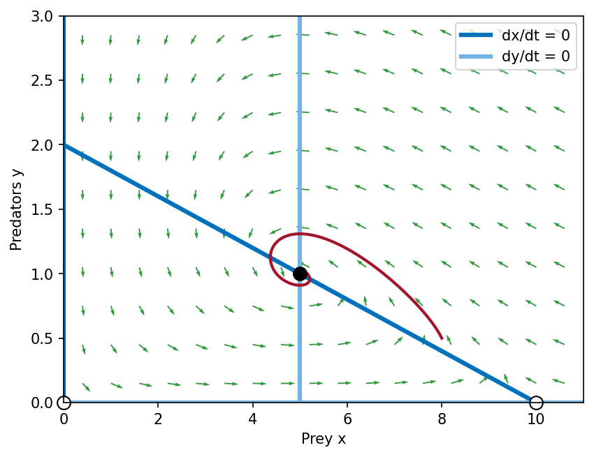
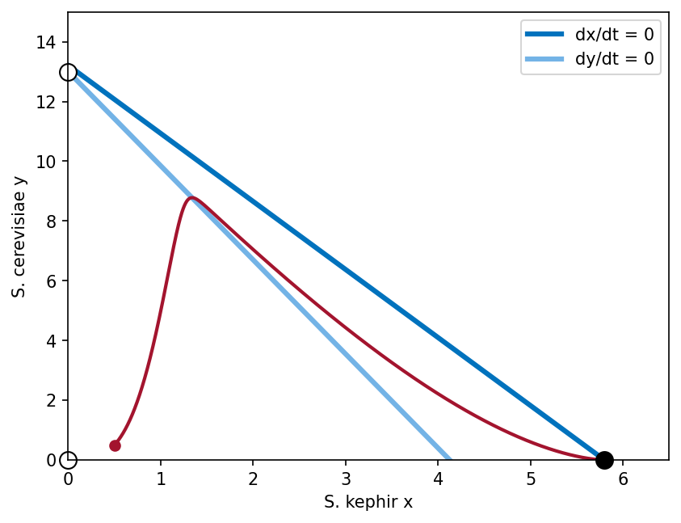
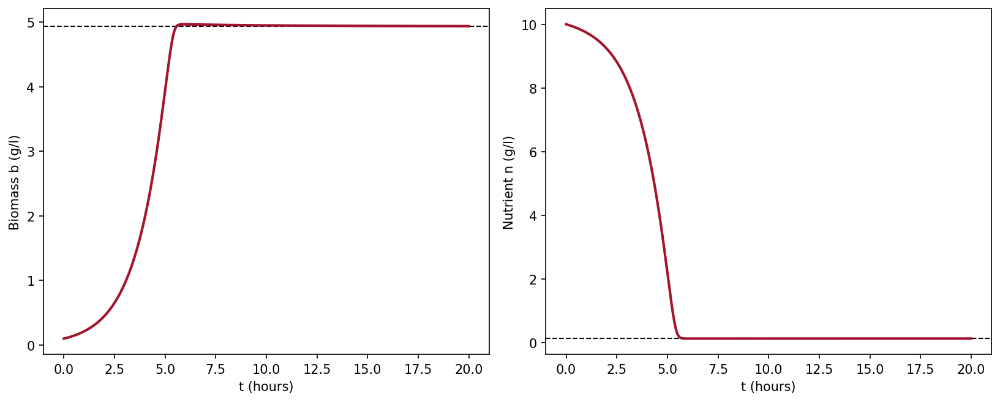
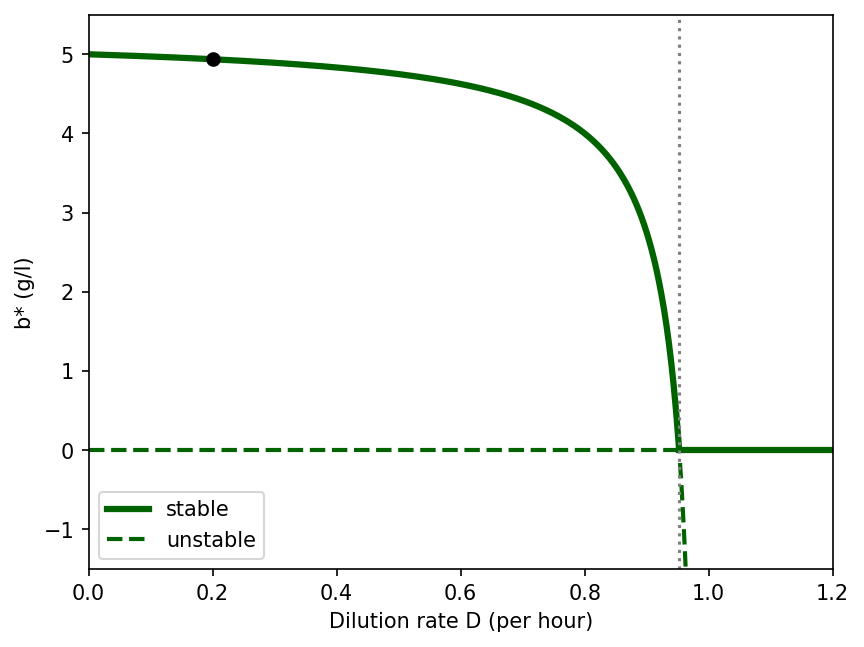
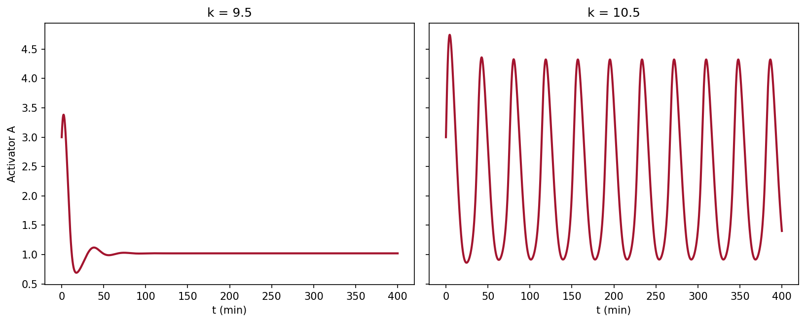
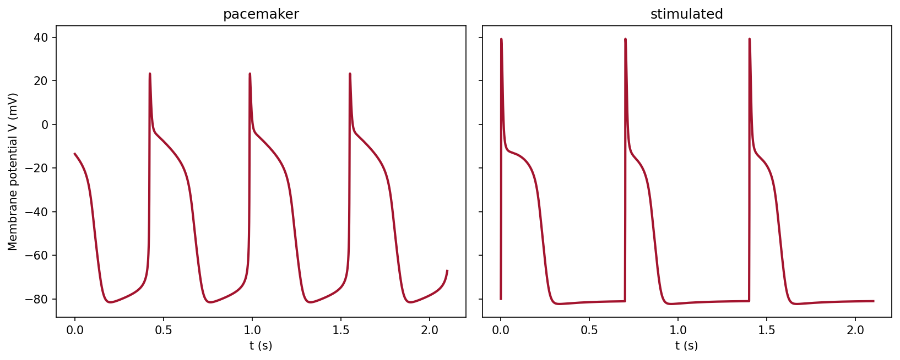

Chapter 4 · Continuous Dynamical Systems with Several Variables
4.4Steady States and Stability
Steady states lie at the intersections of the nullclines. Their stability follows from the eigenvalues of the Jacobian matrix, that is, from the linearization. Examples are predator and prey, competing yeasts, the bioreactor with the washout of the biomass, and limit cycles in gene regulation and in the pacemaker tissue of the heart.
For each figure of the section you will find the program that produces it. Change parameters and initial values and observe what happens. Figure and equation numbers refer to the book.
Fig. 4.17
Nullclines of the predator–prey model
dx/dt = 0: x = 0 or y = (r/c)(1 − x/K); dy/dt = 0: y = 0 or x = e/d
The solution crosses the x-nullclines vertically and the y-nullclines horizontally. The Jacobian matrix at the coexistence state has complex eigenvalues with negative real part: a stable spiral.

# Fig. 4.17: Nullclines of the predator-prey model (book, Section 4.4, Eq. 4.2)
# x-nullclines: x = 0 and y = (r/c)(1 - x/K); y-nullclines: y = 0 and x = e/d; plus direction field and solution
# (c) 2026 Philipp Kügler · Program for the book "Dynamical Systems in the Life Sciences" · MIT License (see LICENSE)
using Printf, Plots
using OrdinaryDiffEq # package OrdinaryDiffEq: using Pkg; Pkg.add("OrdinaryDiffEq")
# solves dz/dt = f(t, z) and returns the solution at the times t (row i = component i)
loese(f, z0, t; alg = Tsit5(), kw...) = Array(solve(ODEProblem((z, p, s) -> f(s, z), float.(z0), (t[1], t[end])), alg;
reltol = 1e-10, abstol = 1e-12, saveat = t, kw...))
using LinearAlgebra
R1 = RGB(0.43, 0.04, 0.12); R2 = RGB(0.64, 0.08, 0.18); R3 = RGB(0.89, 0.44, 0.49)
BL = RGB(0, 0.447, 0.741); HB = RGB(0.45, 0.70, 0.90); GR = RGB(0.2, 0.6, 0.25)
r = 1; K = 10; c = 0.5; d = 0.2; e = 1
f(t, z) = [r * (1 - z[1] / K) * z[1] - c * z[1] * z[2], d * z[1] * z[2] - e * z[2]]
function feldpfeile(f) # direction field: arrows of equal length in the plot
X = Float64[]; Y = Float64[]; U = Float64[]; W = Float64[]
for x in range(0.4, 10.6, length = 18), y in range(0.15, 2.85, length = 10)
u, w = f(0, [x, y]); u /= 11; w /= 3; L = hypot(u, w)
push!(X, x); push!(Y, y); push!(U, u / L * 0.3); push!(W, w / L * 0.3 * 3 / 11)
end
return X, Y, U, W
end
X, Y, U, W = feldpfeile(f)
p = quiver(X, Y, quiver = (U, W), color = GR, label = "", xlims = (0, 11), ylims = (0, 3), xlabel = "Prey x", ylabel = "Predators y",
legend = :topright)
xs = range(0, 10, length = 50)
plot!(p, xs, r / c .* (1 .- xs ./ K), color = BL, lw = 3, label = "dx/dt = 0")
plot!(p, [0, 0], [0, 3], color = BL, lw = 3, label = "")
plot!(p, [e / d, e / d], [0, 3], color = HB, lw = 3, label = "dy/dt = 0")
plot!(p, [0, 11], [0, 0], color = HB, lw = 3, label = "")
z = loese(f, [8, 0.5], range(0, 40, length = 2001))
plot!(p, z[1, :], z[2, :], color = R2, lw = 2, label = "")
xs_ = e / d; ys_ = r / c * (1 - e / (d * K))
J = [r * (1 - 2xs_ / K) - c * ys_ -c * xs_; d * ys_ d * xs_ - e]
lam = sort(complex.(eigvals(J)), by = l -> (imag(l), real(l)))
@printf("coexistence (%g, %g): trace %g, det %g, eigenvalues ", xs_, ys_, tr(J), det(J))
println(join([@sprintf("%.3f%+.3fi", real(l), imag(l)) for l in lam], " "))
scatter!(p, [0, 10], [0, 0], color = :white, msc = :black, ms = 7, label = ""); scatter!(p, [5], [1], color = :black, ms = 7, label = "")
display(p)% Fig. 4.17: Nullclines of the predator-prey model (book, Section 4.4, Eq. 4.2)
% x-nullclines: x = 0 and y = (r/c)(1 - x/K); y-nullclines: y = 0 and x = e/d; plus direction field and solution
% (c) 2026 Philipp Kügler · Program for the book "Dynamical Systems in the Life Sciences" · MIT License (see LICENSE)
r = 1; K = 10; c = 0.5; d = 0.2; e = 1;
f = @(t, z) [r * (1 - z(1) / K) * z(1) - c * z(1) * z(2); d * z(1) * z(2) - e * z(2)];
opt = odeset('RelTol', 1e-9, 'AbsTol', 1e-11);
[X, Y] = meshgrid(linspace(0.4, 10.6, 18), linspace(0.15, 2.85, 10));
U = (r * (1 - X / K) .* X - c * X .* Y) / 11; V = (d * X .* Y - e * Y) / 3; L = sqrt(U.^2 + V.^2);
quiver(X, Y, U ./ L * 0.3, V ./ L * 0.3 * 3 / 11, 0, 'Color', [0.2 0.6 0.25]); hold on
xs = linspace(0, 10, 50);
plot(xs, r / c * (1 - xs / K), 'Color', [0 0.447 0.741], 'LineWidth', 3);
plot([0 0], [0 3], 'Color', [0 0.447 0.741], 'LineWidth', 3);
plot([e / d e / d], [0 3], 'Color', [0.45 0.70 0.90], 'LineWidth', 3);
plot([0 11], [0 0], 'Color', [0.45 0.70 0.90], 'LineWidth', 3);
[t, z] = ode45(f, linspace(0, 40, 2001), [8; 0.5], opt);
plot(z(:, 1), z(:, 2), 'Color', [0.64 0.08 0.18], 'LineWidth', 2);
% Jacobian matrix at the coexistence state (5, 1) and its eigenvalues
xs_ = e / d; ys_ = r / c * (1 - e / (d * K));
J = [r * (1 - 2 * xs_ / K) - c * ys_, -c * xs_; d * ys_, d * xs_ - e];
lam = eig(J); lam = sortrows([imag(lam) real(lam)]);
fprintf('coexistence (%g, %g): trace %g, det %g, eigenvalues %s\n', xs_, ys_, trace(J), det(J), sprintf('%.3f%+.3fi ', lam(:, [2 1])'));
plot([0 10], [0 0], 'ko', 'MarkerFaceColor', 'w', 'MarkerSize', 9); plot(5, 1, 'ko', 'MarkerFaceColor', 'k', 'MarkerSize', 9); hold off
xlim([0 11]); ylim([0 3]); xlabel('Prey x'); ylabel('Predators y');
legend('', 'dx/dt = 0', '', 'dy/dt = 0', 'Location', 'northeast');# Fig. 4.17: Nullclines of the predator-prey model (book, Section 4.4, Eq. 4.2)
# x-nullclines: x = 0 and y = (r/c)(1 - x/K); y-nullclines: y = 0 and x = e/d; plus direction field and solution
# (c) 2026 Philipp Kügler · Program for the book "Dynamical Systems in the Life Sciences" · MIT License (see LICENSE)
import numpy as np
import matplotlib.pyplot as plt
from scipy.integrate import solve_ivp
r, K, c, d, e = 1, 10, 0.5, 0.2, 1
f = lambda t, z: [r * (1 - z[0] / K) * z[0] - c * z[0] * z[1], d * z[0] * z[1] - e * z[1]]
X, Y = np.meshgrid(np.linspace(0.4, 10.6, 18), np.linspace(0.15, 2.85, 10))
U, V = f(0, [X, Y]); U, V = U / 11, V / 3; L = np.hypot(U, V)
plt.quiver(X, Y, U / L * 0.3, V / L * 0.3 * 3 / 11, color=(0.2, 0.6, 0.25), angles="xy", scale_units="xy", scale=1, width=0.0025)
xs = np.linspace(0, 10, 50)
plt.plot(xs, r / c * (1 - xs / K), color=(0, 0.447, 0.741), lw=3, label="dx/dt = 0")
plt.plot([0, 0], [0, 3], color=(0, 0.447, 0.741), lw=3)
plt.plot([e / d, e / d], [0, 3], color=(0.45, 0.70, 0.90), lw=3, label="dy/dt = 0")
plt.plot([0, 11], [0, 0], color=(0.45, 0.70, 0.90), lw=3)
s = solve_ivp(f, [0, 40], [8, 0.5], t_eval=np.linspace(0, 40, 2001), rtol=1e-9, atol=1e-11)
plt.plot(s.y[0], s.y[1], color=(0.64, 0.08, 0.18), lw=2)
# Jacobian matrix at the coexistence state (5, 1) and its eigenvalues
xs_, ys_ = e / d, r / c * (1 - e / (d * K))
J = np.array([[r * (1 - 2 * xs_ / K) - c * ys_, -c * xs_], [d * ys_, d * xs_ - e]])
lam = np.linalg.eigvals(J)
print(f"coexistence ({xs_:g}, {ys_:g}): trace {np.trace(J):g}, det {np.linalg.det(J):g}, eigenvalues",
" ".join(f"{l.real:.3f}{l.imag:+.3f}i" for l in sorted(lam, key=lambda l: (l.imag, l.real))))
plt.plot([0, 10], [0, 0], "o", mfc="w", mec="k", ms=9, clip_on=False); plt.plot(5, 1, "ko", ms=9)
plt.xlim(0, 11); plt.ylim(0, 3); plt.xlabel("Prey x"); plt.ylabel("Predators y"); plt.legend(loc="upper right")
plt.show()# Fig. 4.17: Nullclines of the predator-prey model (book, Section 4.4, Eq. 4.2)
# x-nullclines: x = 0 and y = (r/c)(1 - x/K); y-nullclines: y = 0 and x = e/d; plus direction field and solution
# (c) 2026 Philipp Kügler · Program for the book "Dynamical Systems in the Life Sciences" · MIT License (see LICENSE)
library(deSolve) # package deSolve: install.packages("deSolve")
r <- 1; K <- 10; c <- 0.5; d <- 0.2; e <- 1
f <- function(t, z) c(r * (1 - z[1] / K) * z[1] - c * z[1] * z[2], d * z[1] * z[2] - e * z[2])
loese <- function(f, z0, t) ode(z0, t, function(t, z, p) list(f(t, z)), NULL, method = "lsoda", rtol = 1e-10, atol = 1e-12)
feld <- function(f, xl, yl, nx, ny, laenge = 0.3) { # direction field: arrows of equal length (relative to the axis lengths)
g <- expand.grid(x = seq(xl[1], xl[2], length.out = nx), y = seq(yl[1], yl[2], length.out = ny))
w <- t(apply(g, 1, function(p) f(0, p))); sx <- diff(xl); sy <- diff(yl)
u <- w[, 1] / sx; v <- w[, 2] / sy; L <- sqrt(u^2 + v^2) + 1e-12
arrows(g$x, g$y, g$x + u / L * laenge * sx / 11, g$y + v / L * laenge * sy / 11, length = 0.04, col = rgb(0.2, 0.6, 0.25))
}
plot(NULL, xlim = c(0, 11), ylim = c(0, 3), xlab = "Prey x", ylab = "Predators y")
feld(f, c(0.4, 10.6), c(0.15, 2.85), 18, 10)
xs <- seq(0, 10, length.out = 50)
lines(xs, r / c * (1 - xs / K), col = rgb(0, 0.447, 0.741), lwd = 3); lines(c(0, 0), c(0, 3), col = rgb(0, 0.447, 0.741), lwd = 3)
lines(c(e / d, e / d), c(0, 3), col = rgb(0.45, 0.70, 0.90), lwd = 3); lines(c(0, 11), c(0, 0), col = rgb(0.45, 0.70, 0.90), lwd = 3)
x <- loese(f, c(8, 0.5), seq(0, 40, length.out = 2001))
lines(x[, 2], x[, 3], col = rgb(0.64, 0.08, 0.18), lwd = 2)
# Jacobian matrix at the coexistence state (5, 1) and its eigenvalues
xs_ <- e / d; ys_ <- r / c * (1 - e / (d * K))
J <- matrix(c(r * (1 - 2 * xs_ / K) - c * ys_, -c * xs_, d * ys_, d * xs_ - e), 2, byrow = TRUE)
lam <- eigen(J)$values; lam <- lam[order(Im(lam), Re(lam))]
cat(sprintf("coexistence (%g, %g): trace %g, det %g, eigenvalues ", xs_, ys_, sum(diag(J)), det(J)),
paste(sprintf("%.3f%+.3fi", Re(lam), Im(lam)), collapse = " "), "\n", sep = "")
points(c(0, 10), c(0, 0), pch = 21, bg = "white", cex = 1.3, xpd = TRUE); points(5, 1, pch = 16, cex = 1.3)
legend("topright", legend = c("dx/dt = 0", "dy/dt = 0"), col = c(rgb(0, 0.447, 0.741), rgb(0.45, 0.70, 0.90)), lwd = 3)Output in the command window
coexistence (5, 1): trace -0.5, det 0.5, eigenvalues -0.250-0.661i -0.250+0.661iFig. 4.18
Competition in the phase plane
y = (1 − x/K1)/γ1, y = K2 (1 − γ2 x)
The nullclines do not intersect in the first quadrant; only the state (K1, 0), in which S. kephir alone remains, is stable.

# Fig. 4.18: Competition model in the phase plane (book, Section 4.4, Eq. 4.4)
# nullclines y = (1 - x/K1)/g1 and y = K2 (1 - g2 x), steady states (filled: stable, open: unstable), and the solution from Fig. 4.5
# (c) 2026 Philipp Kügler · Program for the book "Dynamical Systems in the Life Sciences" · MIT License (see LICENSE)
using Printf, Plots
using OrdinaryDiffEq # package OrdinaryDiffEq: using Pkg; Pkg.add("OrdinaryDiffEq")
# solves dz/dt = f(t, z) and returns the solution at the times t (row i = component i)
loese(f, z0, t; alg = Tsit5(), kw...) = Array(solve(ODEProblem((z, p, s) -> f(s, z), float.(z0), (t[1], t[end])), alg;
reltol = 1e-10, abstol = 1e-12, saveat = t, kw...))
using LinearAlgebra
R1 = RGB(0.43, 0.04, 0.12); R2 = RGB(0.64, 0.08, 0.18); R3 = RGB(0.89, 0.44, 0.49)
BL = RGB(0, 0.447, 0.741); HB = RGB(0.45, 0.70, 0.90); GR = RGB(0.2, 0.6, 0.25)
r1 = 0.0607; K1 = 5.8; g1 = 0.0757 # S. kephir
r2 = 0.2183; K2 = 13; g2 = 0.2423 # S. cerevisiae
f(t, z) = [r1 * (1 - z[1] / K1 - g1 * z[2]) * z[1], r2 * (1 - z[2] / K2 - g2 * z[1]) * z[2]]
xs = range(0, 6.5, length = 50)
p = plot(xs, (1 .- xs ./ K1) ./ g1, color = BL, lw = 3, label = "dx/dt = 0", xlims = (0, 6.5), ylims = (0, 15),
xlabel = "S. kephir x", ylabel = "S. cerevisiae y")
plot!(p, xs, K2 .* (1 .- g2 .* xs), color = HB, lw = 3, label = "dy/dt = 0")
z = loese(f, [0.5, 0.5], range(0, 400, length = 4001))
plot!(p, z[1, :], z[2, :], color = R2, lw = 2, label = ""); scatter!(p, [0.5], [0.5], color = R2, label = "")
for (x, y) in [(0, 0), (0, K2), (K1, 0)]
J = [r1 * (1 - 2x / K1 - g1 * y) -r1 * g1 * x; -r2 * g2 * y r2 * (1 - 2y / K2 - g2 * x)]
lam = sort(real.(eigvals(J))); stabil = maximum(lam) < 0
scatter!(p, [x], [y], color = stabil ? :black : :white, msc = :black, ms = 8, label = "")
@printf("(%g, %g): eigenvalues %s -> %s\n", x, y, join([@sprintf("%.4f", l) for l in lam], " "), stabil ? "stable" : "unstable")
end
display(p)% Fig. 4.18: Competition model in the phase plane (book, Section 4.4, Eq. 4.4)
% nullclines y = (1 - x/K1)/g1 and y = K2 (1 - g2 x), steady states (filled: stable, open: unstable), and the solution from Fig. 4.5
% (c) 2026 Philipp Kügler · Program for the book "Dynamical Systems in the Life Sciences" · MIT License (see LICENSE)
r1 = 0.0607; K1 = 5.8; g1 = 0.0757; % S. kephir
r2 = 0.2183; K2 = 13; g2 = 0.2423; % S. cerevisiae
f = @(t, z) [r1 * (1 - z(1) / K1 - g1 * z(2)) * z(1); r2 * (1 - z(2) / K2 - g2 * z(1)) * z(2)];
opt = odeset('RelTol', 1e-9, 'AbsTol', 1e-11);
xs = linspace(0, 6.5, 50);
plot(xs, (1 - xs / K1) / g1, 'Color', [0 0.447 0.741], 'LineWidth', 3); hold on
plot(xs, K2 * (1 - g2 * xs), 'Color', [0.45 0.70 0.90], 'LineWidth', 3);
[t, z] = ode45(f, linspace(0, 400, 4001), [0.5; 0.5], opt);
plot(z(:, 1), z(:, 2), 'Color', [0.64 0.08 0.18], 'LineWidth', 2);
plot(0.5, 0.5, 'o', 'Color', [0.64 0.08 0.18], 'MarkerFaceColor', [0.64 0.08 0.18]);
P = [0 0; 0 K2; K1 0];
for i = 1:3
x = P(i, 1); y = P(i, 2);
J = [r1 * (1 - 2 * x / K1 - g1 * y), -r1 * g1 * x; -r2 * g2 * y, r2 * (1 - 2 * y / K2 - g2 * x)];
lam = sort(real(eig(J)));
if max(lam) < 0, art = 'stable'; fc = 'k'; else, art = 'unstable'; fc = 'w'; end
plot(x, y, 'ko', 'MarkerFaceColor', fc, 'MarkerSize', 10);
fprintf('(%g, %g): eigenvalues %.4f %.4f -> %s\n', x, y, lam, art);
end
hold off
xlim([0 6.5]); ylim([0 15]); xlabel('S. kephir x'); ylabel('S. cerevisiae y');
legend('dx/dt = 0', 'dy/dt = 0');# Fig. 4.18: Competition model in the phase plane (book, Section 4.4, Eq. 4.4)
# nullclines y = (1 - x/K1)/g1 and y = K2 (1 - g2 x), steady states (filled: stable, open: unstable), and the solution from Fig. 4.5
# (c) 2026 Philipp Kügler · Program for the book "Dynamical Systems in the Life Sciences" · MIT License (see LICENSE)
import numpy as np
import matplotlib.pyplot as plt
from scipy.integrate import solve_ivp
r1, K1, g1 = 0.0607, 5.8, 0.0757 # S. kephir
r2, K2, g2 = 0.2183, 13, 0.2423 # S. cerevisiae
f = lambda t, z: [r1 * (1 - z[0] / K1 - g1 * z[1]) * z[0], r2 * (1 - z[1] / K2 - g2 * z[0]) * z[1]]
xs = np.linspace(0, 6.5, 50)
plt.plot(xs, (1 - xs / K1) / g1, color=(0, 0.447, 0.741), lw=3, label="dx/dt = 0")
plt.plot(xs, K2 * (1 - g2 * xs), color=(0.45, 0.70, 0.90), lw=3, label="dy/dt = 0")
s = solve_ivp(f, [0, 400], [0.5, 0.5], t_eval=np.linspace(0, 400, 4001), rtol=1e-9, atol=1e-11)
plt.plot(s.y[0], s.y[1], color=(0.64, 0.08, 0.18), lw=2); plt.plot(0.5, 0.5, "o", color=(0.64, 0.08, 0.18))
for (x, y) in [(0, 0), (0, K2), (K1, 0)]:
J = np.array([[r1 * (1 - 2 * x / K1 - g1 * y), -r1 * g1 * x], [-r2 * g2 * y, r2 * (1 - 2 * y / K2 - g2 * x)]])
lam = np.linalg.eigvals(J); stabil = max(lam.real) < 0
plt.plot(x, y, "o", color="k", mfc="k" if stabil else "w", ms=10, clip_on=False)
print(f"({x:g}, {y:g}): eigenvalues", " ".join(f"{l:.4f}" for l in sorted(lam.real)), "->", "stable" if stabil else "unstable")
plt.xlim(0, 6.5); plt.ylim(0, 15); plt.xlabel("S. kephir x"); plt.ylabel("S. cerevisiae y"); plt.legend()
plt.show()# Fig. 4.18: Competition model in the phase plane (book, Section 4.4, Eq. 4.4)
# nullclines y = (1 - x/K1)/g1 and y = K2 (1 - g2 x), steady states (filled: stable, open: unstable), and the solution from Fig. 4.5
# (c) 2026 Philipp Kügler · Program for the book "Dynamical Systems in the Life Sciences" · MIT License (see LICENSE)
library(deSolve) # package deSolve: install.packages("deSolve")
r1 <- 0.0607; K1 <- 5.8; g1 <- 0.0757 # S. kephir
r2 <- 0.2183; K2 <- 13; g2 <- 0.2423 # S. cerevisiae
f <- function(t, z) c(r1 * (1 - z[1] / K1 - g1 * z[2]) * z[1], r2 * (1 - z[2] / K2 - g2 * z[1]) * z[2])
loese <- function(f, z0, t) ode(z0, t, function(t, z, p) list(f(t, z)), NULL, method = "lsoda", rtol = 1e-10, atol = 1e-12)
xs <- seq(0, 6.5, length.out = 50)
plot(xs, (1 - xs / K1) / g1, type = "l", col = rgb(0, 0.447, 0.741), lwd = 3, xlim = c(0, 6.5), ylim = c(0, 15),
xlab = "S. kephir x", ylab = "S. cerevisiae y")
lines(xs, K2 * (1 - g2 * xs), col = rgb(0.45, 0.70, 0.90), lwd = 3)
x <- loese(f, c(0.5, 0.5), seq(0, 400, length.out = 4001))
lines(x[, 2], x[, 3], col = rgb(0.64, 0.08, 0.18), lwd = 2); points(0.5, 0.5, pch = 16, col = rgb(0.64, 0.08, 0.18))
for (p in list(c(0, 0), c(0, K2), c(K1, 0))) {
xx <- p[1]; yy <- p[2]
J <- matrix(c(r1 * (1 - 2 * xx / K1 - g1 * yy), -r1 * g1 * xx, -r2 * g2 * yy, r2 * (1 - 2 * yy / K2 - g2 * xx)), 2, byrow = TRUE)
lam <- sort(Re(eigen(J)$values)); stabil <- max(lam) < 0
points(xx, yy, pch = 21, bg = if (stabil) "black" else "white", cex = 1.3, xpd = TRUE)
cat(sprintf("(%g, %g): eigenvalues %.4f %.4f -> %s\n", xx, yy, lam[1], lam[2], if (stabil) "stable" else "unstable"))
}
legend("topright", legend = c("dx/dt = 0", "dy/dt = 0"), col = c(rgb(0, 0.447, 0.741), rgb(0.45, 0.70, 0.90)), lwd = 3)Output in the command window
(0, 0): eigenvalues 0.0607 0.2183 -> unstable
(0, 13): eigenvalues -0.2183 0.0010 -> unstable
(5.8, 0): eigenvalues -0.0885 -0.0607 -> stableFig. 4.20
Bioreactor
db/dt = K(n) b − D b, dn/dt = −ν K(n) b − D n + D nin
The biomass grows until the nutrient becomes scarce and settles at b* = (nin − n*)/ν.

# Fig. 4.20: Biomass and nutrient in the bioreactor (book, Section 4.4, Eq. 4.17)
# db/dt = K(n) b - D b, dn/dt = -nu K(n) b - D n + D n_in with K(n) = kmax n/(k50 + n), D = 0.2, n_in = 10, nu = 2, kmax = 1, k50 = 0.5
# start with b(0) = 0.1 g/l and n(0) = n_in; dashed the steady state n* = D k50/(kmax - D), b* = (n_in - n*)/nu
# (c) 2026 Philipp Kügler · Program for the book "Dynamical Systems in the Life Sciences" · MIT License (see LICENSE)
using Printf, Plots
using OrdinaryDiffEq # package OrdinaryDiffEq: using Pkg; Pkg.add("OrdinaryDiffEq")
# solves dz/dt = f(t, z) and returns the solution at the times t (row i = component i)
loese(f, z0, t; alg = Tsit5(), kw...) = Array(solve(ODEProblem((z, p, s) -> f(s, z), float.(z0), (t[1], t[end])), alg;
reltol = 1e-10, abstol = 1e-12, saveat = t, kw...))
R1 = RGB(0.43, 0.04, 0.12); R2 = RGB(0.64, 0.08, 0.18); R3 = RGB(0.89, 0.44, 0.49)
BL = RGB(0, 0.447, 0.741); HB = RGB(0.45, 0.70, 0.90); GR = RGB(0.2, 0.6, 0.25)
D = 0.2; nin = 10; nu = 2; kmax = 1.0; k50 = 0.5 # D in 1/h, concentrations in g/l
K(n) = kmax * n / (k50 + n) # Monod growth rate
f(t, z) = [K(z[2]) * z[1] - D * z[1], -nu * K(z[2]) * z[1] - D * z[2] + D * nin]
t = range(0, 20, length = 2001)
z = loese(f, [0.1, nin], t); b = z[1, :]; n = z[2, :]
ns = D * k50 / (kmax - D); bs = (nin - ns) / nu
@printf("steady state: n* = %.4f g/l, b* = %.4f g/l\n", ns, bs)
@printf("b(20) = %.4f, n(20) = %.4f; largest biomass %.4f at t = %.2f h\n", b[end], n[end], maximum(b), t[argmax(b)])
p1 = hline([bs], color = :black, ls = :dash, legend = false, xlabel = "t (hours)", ylabel = "Biomass b (g/l)")
plot!(p1, t, b, color = R2, lw = 2)
p2 = hline([ns], color = :black, ls = :dash, legend = false, xlabel = "t (hours)", ylabel = "Nutrient n (g/l)")
plot!(p2, t, n, color = R2, lw = 2)
display(plot(p1, p2, layout = (1, 2), size = (900, 420)))% Fig. 4.20: Biomass and nutrient in the bioreactor (book, Section 4.4, Eq. 4.17)
% db/dt = K(n) b - D b, dn/dt = -nu K(n) b - D n + D n_in with K(n) = kmax n/(k50 + n), D = 0.2, n_in = 10, nu = 2, kmax = 1, k50 = 0.5
% start with b(0) = 0.1 g/l and n(0) = n_in; dashed the steady state n* = D k50/(kmax - D), b* = (n_in - n*)/nu
% (c) 2026 Philipp Kügler · Program for the book "Dynamical Systems in the Life Sciences" · MIT License (see LICENSE)
D = 0.2; nin = 10; nu = 2; kmax = 1; k50 = 0.5; % D in 1/h, concentrations in g/l
K = @(n) kmax * n ./ (k50 + n); % Monod growth rate
f = @(t, z) [K(z(2)) * z(1) - D * z(1); -nu * K(z(2)) * z(1) - D * z(2) + D * nin];
opt = odeset('RelTol', 1e-9, 'AbsTol', 1e-11);
[t, z] = ode45(f, linspace(0, 20, 2001), [0.1; nin], opt);
b = z(:, 1); n = z(:, 2);
ns = D * k50 / (kmax - D); bs = (nin - ns) / nu;
fprintf('steady state: n* = %.4f g/l, b* = %.4f g/l\n', ns, bs);
[bm, im] = max(b);
fprintf('b(20) = %.4f, n(20) = %.4f; largest biomass %.4f at t = %.2f h\n', b(end), n(end), bm, t(im));
subplot(1, 2, 1);
plot([0 20], [bs bs], 'k--'); hold on; plot(t, b, 'Color', [0.64 0.08 0.18], 'LineWidth', 2); hold off
xlabel('t (hours)'); ylabel('Biomass b (g/l)');
subplot(1, 2, 2);
plot([0 20], [ns ns], 'k--'); hold on; plot(t, n, 'Color', [0.64 0.08 0.18], 'LineWidth', 2); hold off
xlabel('t (hours)'); ylabel('Nutrient n (g/l)');# Fig. 4.20: Biomass and nutrient in the bioreactor (book, Section 4.4, Eq. 4.17)
# db/dt = K(n) b - D b, dn/dt = -nu K(n) b - D n + D n_in with K(n) = kmax n/(k50 + n), D = 0.2, n_in = 10, nu = 2, kmax = 1, k50 = 0.5
# start with b(0) = 0.1 g/l and n(0) = n_in; dashed the steady state n* = D k50/(kmax - D), b* = (n_in - n*)/nu
# (c) 2026 Philipp Kügler · Program for the book "Dynamical Systems in the Life Sciences" · MIT License (see LICENSE)
import numpy as np
import matplotlib.pyplot as plt
from scipy.integrate import solve_ivp
D, nin, nu, kmax, k50 = 0.2, 10, 2, 1.0, 0.5 # D in 1/h, concentrations in g/l
K = lambda n: kmax * n / (k50 + n) # Monod growth rate
f = lambda t, z: [K(z[1]) * z[0] - D * z[0], -nu * K(z[1]) * z[0] - D * z[1] + D * nin]
t = np.linspace(0, 20, 2001)
s = solve_ivp(f, [0, 20], [0.1, nin], t_eval=t, rtol=1e-9, atol=1e-11)
b, n = s.y
ns = D * k50 / (kmax - D); bs = (nin - ns) / nu
print(f"steady state: n* = {ns:.4f} g/l, b* = {bs:.4f} g/l")
print(f"b(20) = {b[-1]:.4f}, n(20) = {n[-1]:.4f}; largest biomass {b.max():.4f} at t = {t[b.argmax()]:.2f} h")
fig, axs = plt.subplots(1, 2, figsize=(11, 4.5))
axs[0].axhline(bs, color="k", ls="--", lw=1); axs[0].plot(t, b, color=(0.64, 0.08, 0.18), lw=2)
axs[0].set_xlabel("t (hours)"); axs[0].set_ylabel("Biomass b (g/l)")
axs[1].axhline(ns, color="k", ls="--", lw=1); axs[1].plot(t, n, color=(0.64, 0.08, 0.18), lw=2)
axs[1].set_xlabel("t (hours)"); axs[1].set_ylabel("Nutrient n (g/l)")
plt.tight_layout()
plt.show()# Fig. 4.20: Biomass and nutrient in the bioreactor (book, Section 4.4, Eq. 4.17)
# db/dt = K(n) b - D b, dn/dt = -nu K(n) b - D n + D n_in with K(n) = kmax n/(k50 + n), D = 0.2, n_in = 10, nu = 2, kmax = 1, k50 = 0.5
# start with b(0) = 0.1 g/l and n(0) = n_in; dashed the steady state n* = D k50/(kmax - D), b* = (n_in - n*)/nu
# (c) 2026 Philipp Kügler · Program for the book "Dynamical Systems in the Life Sciences" · MIT License (see LICENSE)
library(deSolve) # package deSolve: install.packages("deSolve")
D <- 0.2; nin <- 10; nu <- 2; kmax <- 1; k50 <- 0.5 # D in 1/h, concentrations in g/l
K <- function(n) kmax * n / (k50 + n) # Monod growth rate
f <- function(t, z) c(K(z[2]) * z[1] - D * z[1], -nu * K(z[2]) * z[1] - D * z[2] + D * nin)
loese <- function(f, z0, t) ode(z0, t, function(t, z, p) list(f(t, z)), NULL, method = "lsoda", rtol = 1e-10, atol = 1e-12)
x <- loese(f, c(0.1, nin), seq(0, 20, length.out = 2001))
b <- x[, 2]; n <- x[, 3]
ns <- D * k50 / (kmax - D); bs <- (nin - ns) / nu
cat(sprintf("steady state: n* = %.4f g/l, b* = %.4f g/l\n", ns, bs))
cat(sprintf("b(20) = %.4f, n(20) = %.4f; largest biomass %.4f at t = %.2f h\n", b[length(b)], n[length(n)], max(b), x[which.max(b), 1]))
par(mfrow = c(1, 2))
plot(x[, 1], b, type = "l", col = rgb(0.64, 0.08, 0.18), lwd = 2, xlab = "t (hours)", ylab = "Biomass b (g/l)"); abline(h = bs, lty = 2)
plot(x[, 1], n, type = "l", col = rgb(0.64, 0.08, 0.18), lwd = 2, xlab = "t (hours)", ylab = "Nutrient n (g/l)"); abline(h = ns, lty = 2)Output in the command window
steady state: n* = 0.1250 g/l, b* = 4.9375 g/l
b(20) = 4.9394, n(20) = 0.1249; largest biomass 4.9682 at t = 5.91 hFig. 4.21
Washout
Dc = K(nin) ≈ 0.95 per hour
If the dilution is too fast, the biomass no longer grows back and is washed out. The output also computes the yield D b*.

# Fig. 4.21: Washout in the bioreactor (book, Section 4.4, Eq. 4.17)
# steady-state biomass b* = (n_in - D k50/(kmax - D))/nu as a function of D; above D_c = K(n_in) the biomass is washed out
# (c) 2026 Philipp Kügler · Program for the book "Dynamical Systems in the Life Sciences" · MIT License (see LICENSE)
using Printf, Plots
D = 0.2; nin = 10; nu = 2; kmax = 1.0; k50 = 0.5 # D in 1/h, concentrations in g/l
K(n) = kmax * n / (k50 + n) # Monod growth rate
Dc = K(nin)
bst(D) = (nin - D * k50 / (kmax - D)) / nu
gruen = RGB(0, 0.39, 0)
Dg = range(0.001, 1.2, length = 600)
D1 = Dg[Dg .<= Dc]; D2 = Dg[(Dg .>= Dc) .& (Dg .<= 0.985)]
p = plot(D1, bst.(D1), color = gruen, lw = 3, label = "stable", xlims = (0, 1.2), ylims = (-1.5, 5.5), legend = :bottomleft,
xlabel = "Dilution rate D (per hour)", ylabel = "b* (g/l)")
plot!(p, D2, bst.(D2), ls = :dash, color = gruen, lw = 2, label = "")
plot!(p, [0, Dc], [0, 0], ls = :dash, color = gruen, lw = 2, label = "unstable")
plot!(p, [Dc, 1.2], [0, 0], color = gruen, lw = 3, label = "")
vline!(p, [Dc], color = :gray, ls = :dot, label = ""); scatter!(p, [D], [bst(D)], color = :black, label = "")
@printf("D_c = K(n_in) = %.4f per hour\n", Dc)
for DD in (0.2, 0.5, 0.9)
@printf("D = %g: b* = %.4f g/l, yield D b* = %.4f g/(l h)\n", DD, bst(DD), DD * bst(DD))
end
display(p)% Fig. 4.21: Washout in the bioreactor (book, Section 4.4, Eq. 4.17)
% steady-state biomass b* = (n_in - D k50/(kmax - D))/nu as a function of D; above D_c = K(n_in) the biomass is washed out
% (c) 2026 Philipp Kügler · Program for the book "Dynamical Systems in the Life Sciences" · MIT License (see LICENSE)
D = 0.2; nin = 10; nu = 2; kmax = 1; k50 = 0.5; % D in 1/h, concentrations in g/l
K = @(n) kmax * n ./ (k50 + n); % Monod growth rate
Dc = K(nin);
bst = @(D) (nin - D * k50 ./ (kmax - D)) / nu;
gruen = [0 0.39 0];
Dg = linspace(0.001, 1.2, 600);
D1 = Dg(Dg <= Dc); D2 = Dg(Dg >= Dc & Dg <= 0.985);
plot(D1, bst(D1), 'Color', gruen, 'LineWidth', 3); hold on
plot(D2, bst(D2), '--', 'Color', gruen, 'LineWidth', 2);
plot([0 Dc], [0 0], '--', 'Color', gruen, 'LineWidth', 2);
plot([Dc 1.2], [0 0], 'Color', gruen, 'LineWidth', 3);
plot([Dc Dc], [-1.5 5.5], ':', 'Color', [0.5 0.5 0.5]); plot(D, bst(D), 'ko', 'MarkerFaceColor', 'k'); hold off
fprintf('D_c = K(n_in) = %.4f per hour\n', Dc);
for DD = [0.2 0.5 0.9]
fprintf('D = %g: b* = %.4f g/l, yield D b* = %.4f g/(l h)\n', DD, bst(DD), DD * bst(DD));
end
xlim([0 1.2]); ylim([-1.5 5.5]); xlabel('Dilution rate D (per hour)'); ylabel('b* (g/l)');
legend('stable', '', 'unstable', 'Location', 'southwest');# Fig. 4.21: Washout in the bioreactor (book, Section 4.4, Eq. 4.17)
# steady-state biomass b* = (n_in - D k50/(kmax - D))/nu as a function of D; above D_c = K(n_in) the biomass is washed out
# (c) 2026 Philipp Kügler · Program for the book "Dynamical Systems in the Life Sciences" · MIT License (see LICENSE)
import numpy as np
import matplotlib.pyplot as plt
from scipy.integrate import solve_ivp
D, nin, nu, kmax, k50 = 0.2, 10, 2, 1.0, 0.5 # D in 1/h, concentrations in g/l
K = lambda n: kmax * n / (k50 + n) # Monod growth rate
Dc = K(nin)
bst = lambda D: (nin - D * k50 / (kmax - D)) / nu
gruen = (0, 0.39, 0)
Dg = np.linspace(0.001, 1.2, 600)
D1 = Dg[Dg <= Dc]; D2 = Dg[(Dg >= Dc) & (Dg <= 0.985)]
plt.plot(D1, bst(D1), color=gruen, lw=3, label="stable")
plt.plot(D2, bst(D2), "--", color=gruen, lw=2)
plt.plot([0, Dc], [0, 0], "--", color=gruen, lw=2, label="unstable")
plt.plot([Dc, 1.2], [0, 0], color=gruen, lw=3)
plt.axvline(Dc, color="0.5", ls=":"); plt.plot(D, bst(D), "ko")
print(f"D_c = K(n_in) = {Dc:.4f} per hour")
for DD in [0.2, 0.5, 0.9]:
print(f"D = {DD}: b* = {bst(DD):.4f} g/l, yield D b* = {DD * bst(DD):.4f} g/(l h)")
plt.xlim(0, 1.2); plt.ylim(-1.5, 5.5); plt.xlabel("Dilution rate D (per hour)"); plt.ylabel("b* (g/l)"); plt.legend(loc="lower left")
plt.show()# Fig. 4.21: Washout in the bioreactor (book, Section 4.4, Eq. 4.17)
# steady-state biomass b* = (n_in - D k50/(kmax - D))/nu as a function of D; above D_c = K(n_in) the biomass is washed out
# (c) 2026 Philipp Kügler · Program for the book "Dynamical Systems in the Life Sciences" · MIT License (see LICENSE)
D <- 0.2; nin <- 10; nu <- 2; kmax <- 1; k50 <- 0.5 # D in 1/h, concentrations in g/l
K <- function(n) kmax * n / (k50 + n) # Monod growth rate
Dc <- K(nin)
bst <- function(D) (nin - D * k50 / (kmax - D)) / nu
gruen <- rgb(0, 0.39, 0)
Dg <- seq(0.001, 1.2, length.out = 600)
D1 <- Dg[Dg <= Dc]; D2 <- Dg[Dg >= Dc & Dg <= 0.985]
plot(D1, bst(D1), type = "l", col = gruen, lwd = 3, xlim = c(0, 1.2), ylim = c(-1.5, 5.5), xlab = "Dilution rate D (per hour)", ylab = "b* (g/l)")
lines(D2, bst(D2), lty = 2, col = gruen, lwd = 2)
lines(c(0, Dc), c(0, 0), lty = 2, col = gruen, lwd = 2); lines(c(Dc, 1.2), c(0, 0), col = gruen, lwd = 3)
abline(v = Dc, lty = 3, col = "grey50"); points(D, bst(D), pch = 16)
cat(sprintf("D_c = K(n_in) = %.4f per hour\n", Dc))
for (DD in c(0.2, 0.5, 0.9)) cat(sprintf("D = %g: b* = %.4f g/l, yield D b* = %.4f g/(l h)\n", DD, bst(DD), DD * bst(DD)))
legend("bottomleft", legend = c("stable", "unstable"), col = gruen, lty = 1:2, lwd = c(3, 2))Output in the command window
D_c = K(n_in) = 0.9524 per hour
D = 0.2: b* = 4.9375 g/l, yield D b* = 0.9875 g/(l h)
D = 0.5: b* = 4.7500 g/l, yield D b* = 2.3750 g/(l h)
D = 0.9: b* = 2.7500 g/l, yield D b* = 2.4750 g/(l h)Fig. 4.22
Gene regulation with activator and repressor
dA/dt = k A2/(A2 + 10 (1 + 5R)) − A + 0.4
For k = 9.5 the oscillation dies away, for k = 10.5 a limit cycle with a period of about 38 minutes arises.

# Fig. 4.22: Gene regulation with activator and repressor (book, Section 4.4, Eq. 4.18)
# dA/dt = k A^2/(A^2 + 10 (1 + 5R)) - A + 0.4, dR/dt = 0.3 A^2/(A^2 + 10 (1 + 5R)) - 0.2 R with A(0) = 3, R(0) = 0.2
# left k = 9.5: damped oscillation; right k = 10.5: limit cycle
# (c) 2026 Philipp Kügler · Program for the book "Dynamical Systems in the Life Sciences" · MIT License (see LICENSE)
using Printf, Plots
using OrdinaryDiffEq # package OrdinaryDiffEq: using Pkg; Pkg.add("OrdinaryDiffEq")
# solves dz/dt = f(t, z) and returns the solution at the times t (row i = component i)
loese(f, z0, t; alg = Tsit5(), kw...) = Array(solve(ODEProblem((z, p, s) -> f(s, z), float.(z0), (t[1], t[end])), alg;
reltol = 1e-10, abstol = 1e-12, saveat = t, kw...))
t = range(0, 400, length = 4001)
bilder = []
for k in (9.5, 10.5)
f(t, z) = [k * z[1]^2 / (z[1]^2 + 10 * (1 + 5z[2])) - z[1] + 0.4,
0.3 * z[1]^2 / (z[1]^2 + 10 * (1 + 5z[2])) - 0.2 * z[2]]
A = loese(f, [3, 0.2], t)[1, :]
push!(bilder, plot(t, A, color = RGB(0.64, 0.08, 0.18), lw = 2, legend = false, title = "k = $k", xlabel = "t (min)",
ylabel = k == 9.5 ? "Activator A" : ""))
spaet = t .> 200 # maxima after the transient
i = [j for j in 2:length(A) - 1 if A[j] > A[j - 1] && A[j] > A[j + 1] && spaet[j]]
schwankung = maximum(A[spaet]) - minimum(A[spaet])
if schwankung > 0.01
@printf("k = %g: variation of A for t > 200: %.3f, period %.1f min\n", k, schwankung, sum(diff(t[i])) / (length(i) - 1))
else
@printf("k = %g: variation of A for t > 200: %.3f (steady state)\n", k, schwankung)
end
end
display(plot(bilder..., layout = (1, 2), link = :y, size = (900, 420)))% Fig. 4.22: Gene regulation with activator and repressor (book, Section 4.4, Eq. 4.18)
% dA/dt = k A^2/(A^2 + 10 (1 + 5R)) - A + 0.4, dR/dt = 0.3 A^2/(A^2 + 10 (1 + 5R)) - 0.2 R with A(0) = 3, R(0) = 0.2
% left k = 9.5: damped oscillation; right k = 10.5: limit cycle
% (c) 2026 Philipp Kügler · Program for the book "Dynamical Systems in the Life Sciences" · MIT License (see LICENSE)
ks = [9.5 10.5];
opt = odeset('RelTol', 1e-9, 'AbsTol', 1e-11);
t = linspace(0, 400, 4001)';
for j = 1:2
k = ks(j);
f = @(t, z) [k * z(1)^2 / (z(1)^2 + 10 * (1 + 5 * z(2))) - z(1) + 0.4;
0.3 * z(1)^2 / (z(1)^2 + 10 * (1 + 5 * z(2))) - 0.2 * z(2)];
[t, z] = ode45(f, t, [3; 0.2], opt);
A = z(:, 1);
subplot(1, 2, j);
plot(t, A, 'Color', [0.64 0.08 0.18], 'LineWidth', 2); title(sprintf('k = %g', k)); xlabel('t (min)');
if j == 1, ylabel('Activator A'); end
spaet = t > 200; % maxima after the transient
i = find(A(2:end-1) > A(1:end-2) & A(2:end-1) > A(3:end) & spaet(2:end-1)) + 1;
schwankung = max(A(spaet)) - min(A(spaet));
if schwankung > 0.01
fprintf('k = %g: variation of A for t > 200: %.3f, period %.1f min\n', k, schwankung, mean(diff(t(i))));
else
fprintf('k = %g: variation of A for t > 200: %.3f (steady state)\n', k, schwankung);
end
end# Fig. 4.22: Gene regulation with activator and repressor (book, Section 4.4, Eq. 4.18)
# dA/dt = k A^2/(A^2 + 10 (1 + 5R)) - A + 0.4, dR/dt = 0.3 A^2/(A^2 + 10 (1 + 5R)) - 0.2 R with A(0) = 3, R(0) = 0.2
# left k = 9.5: damped oscillation; right k = 10.5: limit cycle
# (c) 2026 Philipp Kügler · Program for the book "Dynamical Systems in the Life Sciences" · MIT License (see LICENSE)
import numpy as np
import matplotlib.pyplot as plt
from scipy.integrate import solve_ivp
fig, axs = plt.subplots(1, 2, figsize=(11, 4.5), sharey=True)
t = np.linspace(0, 400, 4001)
for ax, k in zip(axs, [9.5, 10.5]):
f = lambda t, z: [k * z[0]**2 / (z[0]**2 + 10 * (1 + 5 * z[1])) - z[0] + 0.4,
0.3 * z[0]**2 / (z[0]**2 + 10 * (1 + 5 * z[1])) - 0.2 * z[1]]
A = solve_ivp(f, [0, 400], [3, 0.2], t_eval=t, rtol=1e-9, atol=1e-11).y[0]
ax.plot(t, A, color=(0.64, 0.08, 0.18), lw=2); ax.set_title(f"k = {k}"); ax.set_xlabel("t (min)")
spaet = t > 200 # maxima after the transient
i = np.where((A[1:-1] > A[:-2]) & (A[1:-1] > A[2:]) & spaet[1:-1])[0] + 1
schwankung = A[spaet].max() - A[spaet].min()
if schwankung > 0.01:
print(f"k = {k}: variation of A for t > 200: {schwankung:.3f}, period {np.mean(np.diff(t[i])):.1f} min")
else:
print(f"k = {k}: variation of A for t > 200: {schwankung:.3f} (steady state)")
axs[0].set_ylabel("Activator A")
plt.tight_layout()
plt.show()# Fig. 4.22: Gene regulation with activator and repressor (book, Section 4.4, Eq. 4.18)
# dA/dt = k A^2/(A^2 + 10 (1 + 5R)) - A + 0.4, dR/dt = 0.3 A^2/(A^2 + 10 (1 + 5R)) - 0.2 R with A(0) = 3, R(0) = 0.2
# left k = 9.5: damped oscillation; right k = 10.5: limit cycle
# (c) 2026 Philipp Kügler · Program for the book "Dynamical Systems in the Life Sciences" · MIT License (see LICENSE)
library(deSolve) # package deSolve: install.packages("deSolve")
loese <- function(f, z0, t) ode(z0, t, function(t, z, p) list(f(t, z)), NULL, method = "lsoda", rtol = 1e-10, atol = 1e-12)
t <- seq(0, 400, length.out = 4001)
par(mfrow = c(1, 2))
for (k in c(9.5, 10.5)) {
f <- function(t, z) c(k * z[1]^2 / (z[1]^2 + 10 * (1 + 5 * z[2])) - z[1] + 0.4,
0.3 * z[1]^2 / (z[1]^2 + 10 * (1 + 5 * z[2])) - 0.2 * z[2])
A <- loese(f, c(3, 0.2), t)[, 2]
plot(t, A, type = "l", col = rgb(0.64, 0.08, 0.18), lwd = 2, ylim = c(0, 4.8), xlab = "t (min)", ylab = "Activator A", main = sprintf("k = %g", k))
spaet <- t > 200 # maxima after the transient
i <- which(A[2:4000] > A[1:3999] & A[2:4000] > A[3:4001] & spaet[2:4000]) + 1
schwankung <- max(A[spaet]) - min(A[spaet])
if (schwankung > 0.01) {
cat(sprintf("k = %g: variation of A for t > 200: %.3f, period %.1f min\n", k, schwankung, mean(diff(t[i]))))
} else {
cat(sprintf("k = %g: variation of A for t > 200: %.3f (steady state)\n", k, schwankung))
}
}Output in the command window
k = 9.5: variation of A for t > 200: 0.000 (steady state)
k = 10.5: variation of A for t > 200: 3.407, period 38.2 minFig. 4.23
Noble model
Cm dV/dt = −(gNa m3 h + 0.14)(V − VNa) − … − gL (V − VL)
The pacemaker cell fires on its own, about every 0.56 s. The excitable cell responds only to stimuli. For this stiff system the programs use LSODA or ode15s.

# Fig. 4.23: Membrane potential in the Noble model (book, Section 4.4, Eq. 4.19)
# Cm dV/dt = -(400 m^3 h + 0.14)(V - 40) - (1.2 e^((-V-90)/50) + 0.015 e^((V+90)/60) + 1.2 n^4)(V + 100) - gL (V - VL) + I(t), Cm = 12
# left pacemaker cell (gL = 0.075, VL = -60), right excitable cell (gL = 0.3, VL = -85) with stimuli every 700 ms; time in ms
# (c) 2026 Philipp Kügler · Program for the book "Dynamical Systems in the Life Sciences" · MIT License (see LICENSE)
using Printf, Plots
using OrdinaryDiffEq # package OrdinaryDiffEq: using Pkg; Pkg.add("OrdinaryDiffEq")
# solves dz/dt = f(t, z) and returns the solution at the times t (row i = component i)
loese(f, z0, t; alg = Tsit5(), kw...) = Array(solve(ODEProblem((z, p, s) -> f(s, z), float.(z0), (t[1], t[end])), alg;
reltol = 1e-10, abstol = 1e-12, saveat = t, kw...))
function noble(gL, VL, reiz)
function f(t, z)
V, m, h, n = z
am = 0.1 * (-V - 48) / (exp((-V - 48) / 15) - 1); bm = 0.12 * (V + 8) / (exp((V + 8) / 5) - 1)
ah = 0.17 * exp((-V - 90) / 20); bh = 1 / (1 + exp((-V - 42) / 10))
an = 0.0001 * (-V - 50) / (exp((-V - 50) / 10) - 1); bn = 0.002 * exp((-V - 90) / 80)
iNa = (400 * m^3 * h + 0.14) * (V - 40)
iK = (1.2 * exp((-V - 90) / 50) + 0.015 * exp((V + 90) / 60) + 1.2 * n^4) * (V + 100)
I = reiz && t - 700 * floor(t / 700) < 2 ? 300.0 : 0.0 # stimulus: 2 ms long every 700 ms
return [(-(iNa + iK + gL * (V - VL)) + I) / 12, am * (1 - m) - bm * m, ah * (1 - h) - bh * h, an * (1 - n) - bn * n]
end
return f
end
bilder = []
for (name, gL, VL, reiz, T0) in [("pacemaker", 0.075, -60, false, 2000), ("stimulated", 0.3, -85, true, 0)]
T = T0 + 2100
t = 0:0.1:T
z = loese(noble(gL, VL, reiz), [-80, 0.02, 0.8, 0.05], t, alg = Rodas5P(), dtmax = 0.25, reltol = 1e-8, abstol = 1e-10)
i = t .>= T0; tt = (t[i] .- T0) ./ 1000; V = z[1, i]
hoch = tt[2:end][(V[1:end - 1] .< 0) .& (V[2:end] .>= 0)] # times at which V reaches 0 mV from below
@printf("%s: V between %.0f and %.0f mV, %d action potentials in 2.1 s", name, minimum(V), maximum(V), length(hoch))
length(hoch) > 1 && @printf(", period %.2f s", sum(diff(hoch)) / (length(hoch) - 1))
println()
push!(bilder, plot(tt, V, color = RGB(0.64, 0.08, 0.18), lw = 2, legend = false, title = name, xlabel = "t (s)",
ylabel = name == "stimulated" ? "" : "Membrane potential V (mV)"))
end
display(plot(bilder..., layout = (1, 2), link = :y, size = (900, 420)))% Fig. 4.23: Membrane potential in the Noble model (book, Section 4.4, Eq. 4.19)
% Cm dV/dt = -(400 m^3 h + 0.14)(V - 40) - (1.2 e^((-V-90)/50) + 0.015 e^((V+90)/60) + 1.2 n^4)(V + 100) - gL (V - VL) + I(t), Cm = 12
% left pacemaker cell (gL = 0.075, VL = -60), right excitable cell (gL = 0.3, VL = -85) with stimuli every 700 ms; time in ms
% (c) 2026 Philipp Kügler · Program for the book "Dynamical Systems in the Life Sciences" · MIT License (see LICENSE)
namen = {'pacemaker', 'stimulated'};
gLs = [0.075 0.3]; VLs = [-60 -85]; reiz = [false true]; T0s = [2000 0];
opt = odeset('RelTol', 1e-8, 'AbsTol', 1e-10, 'MaxStep', 0.25);
for j = 1:2
gL = gLs(j); VL = VLs(j); mitReiz = reiz(j);
% z = (V, m, h, n); rates alpha and beta of the channels
am = @(V) 0.1 * (-V - 48) / (exp((-V - 48) / 15) - 1); bm = @(V) 0.12 * (V + 8) / (exp((V + 8) / 5) - 1);
ah = @(V) 0.17 * exp((-V - 90) / 20); bh = @(V) 1 / (1 + exp((-V - 42) / 10));
an = @(V) 0.0001 * (-V - 50) / (exp((-V - 50) / 10) - 1); bn = @(V) 0.002 * exp((-V - 90) / 80);
iNa = @(z) (400 * z(2)^3 * z(3) + 0.14) * (z(1) - 40);
iK = @(z) (1.2 * exp((-z(1) - 90) / 50) + 0.015 * exp((z(1) + 90) / 60) + 1.2 * z(4)^4) * (z(1) + 100);
I = @(t) 300 * (mitReiz && mod(t, 700) < 2); % stimulus: 2 ms long every 700 ms
f = @(t, z) [(-(iNa(z) + iK(z) + gL * (z(1) - VL)) + I(t)) / 12;
am(z(1)) * (1 - z(2)) - bm(z(1)) * z(2);
ah(z(1)) * (1 - z(3)) - bh(z(1)) * z(3);
an(z(1)) * (1 - z(4)) - bn(z(1)) * z(4)];
T = T0s(j) + 2100;
[t, z] = ode15s(f, 0:0.1:T, [-80; 0.02; 0.8; 0.05], opt);
i = t >= T0s(j); tt = (t(i) - T0s(j)) / 1000; V = z(i, 1);
hoch = tt(find(V(1:end-1) < 0 & V(2:end) >= 0) + 1); % times at which V reaches 0 mV from below
txt = sprintf('%s: V between %.0f and %.0f mV, %d action potentials in 2.1 s', namen{j}, min(V), max(V), numel(hoch));
if numel(hoch) > 1, txt = [txt sprintf(', period %.2f s', mean(diff(hoch)))]; end
fprintf('%s\n', txt);
subplot(1, 2, j);
plot(tt, V, 'Color', [0.64 0.08 0.18], 'LineWidth', 2); title(namen{j}); xlabel('t (s)');
if j == 1, ylabel('Membrane potential V (mV)'); end
end# Fig. 4.23: Membrane potential in the Noble model (book, Section 4.4, Eq. 4.19)
# Cm dV/dt = -(400 m^3 h + 0.14)(V - 40) - (1.2 e^((-V-90)/50) + 0.015 e^((V+90)/60) + 1.2 n^4)(V + 100) - gL (V - VL) + I(t), Cm = 12
# left pacemaker cell (gL = 0.075, VL = -60), right excitable cell (gL = 0.3, VL = -85) with stimuli every 700 ms; time in ms
# (c) 2026 Philipp Kügler · Program for the book "Dynamical Systems in the Life Sciences" · MIT License (see LICENSE)
import numpy as np
import matplotlib.pyplot as plt
from scipy.integrate import solve_ivp
def noble(gL, VL, reiz):
def f(t, z):
V, m, h, n = z
am = 0.1 * (-V - 48) / (np.exp((-V - 48) / 15) - 1); bm = 0.12 * (V + 8) / (np.exp((V + 8) / 5) - 1)
ah = 0.17 * np.exp((-V - 90) / 20); bh = 1 / (1 + np.exp((-V - 42) / 10))
an = 0.0001 * (-V - 50) / (np.exp((-V - 50) / 10) - 1); bn = 0.002 * np.exp((-V - 90) / 80)
iNa = (400 * m**3 * h + 0.14) * (V - 40)
iK = (1.2 * np.exp((-V - 90) / 50) + 0.015 * np.exp((V + 90) / 60) + 1.2 * n**4) * (V + 100)
I = 300.0 if reiz and (t % 700) < 2 else 0.0 # stimulus: 2 ms long every 700 ms
return [(-(iNa + iK + gL * (V - VL)) + I) / 12, am * (1 - m) - bm * m, ah * (1 - h) - bh * h, an * (1 - n) - bn * n]
return f
fig, axs = plt.subplots(1, 2, figsize=(11, 4.5), sharey=True)
for ax, name, gL, VL, reiz, T0 in [(axs[0], "pacemaker", 0.075, -60, False, 2000), (axs[1], "stimulated", 0.3, -85, True, 0)]:
T = T0 + 2100
t = np.arange(0, T + 0.05, 0.1)
s = solve_ivp(noble(gL, VL, reiz), [0, T], [-80, 0.02, 0.8, 0.05], t_eval=t, method="LSODA", max_step=0.25, rtol=1e-8, atol=1e-10)
i = t >= T0; tt = (t[i] - T0) / 1000; V = s.y[0][i]
hoch = tt[1:][(V[:-1] < 0) & (V[1:] >= 0)] # times at which V reaches 0 mV from below
print(f"{name}: V between {V.min():.0f} and {V.max():.0f} mV, {len(hoch)} action potentials in 2.1 s"
+ (f", period {np.mean(np.diff(hoch)):.2f} s" if len(hoch) > 1 else ""))
ax.plot(tt, V, color=(0.64, 0.08, 0.18), lw=2); ax.set_title(name); ax.set_xlabel("t (s)")
axs[0].set_ylabel("Membrane potential V (mV)")
plt.tight_layout()
plt.show()# Fig. 4.23: Membrane potential in the Noble model (book, Section 4.4, Eq. 4.19)
# Cm dV/dt = -(400 m^3 h + 0.14)(V - 40) - (1.2 e^((-V-90)/50) + 0.015 e^((V+90)/60) + 1.2 n^4)(V + 100) - gL (V - VL) + I(t), Cm = 12
# left pacemaker cell (gL = 0.075, VL = -60), right excitable cell (gL = 0.3, VL = -85) with stimuli every 700 ms; time in ms
# (c) 2026 Philipp Kügler · Program for the book "Dynamical Systems in the Life Sciences" · MIT License (see LICENSE)
library(deSolve) # package deSolve: install.packages("deSolve")
noble <- function(gL, VL, reiz) function(t, z, p) {
V <- z[1]; m <- z[2]; h <- z[3]; n <- z[4]
am <- 0.1 * (-V - 48) / (exp((-V - 48) / 15) - 1); bm <- 0.12 * (V + 8) / (exp((V + 8) / 5) - 1)
ah <- 0.17 * exp((-V - 90) / 20); bh <- 1 / (1 + exp((-V - 42) / 10))
an <- 0.0001 * (-V - 50) / (exp((-V - 50) / 10) - 1); bn <- 0.002 * exp((-V - 90) / 80)
iNa <- (400 * m^3 * h + 0.14) * (V - 40)
iK <- (1.2 * exp((-V - 90) / 50) + 0.015 * exp((V + 90) / 60) + 1.2 * n^4) * (V + 100)
I <- if (reiz && t %% 700 < 2) 300 else 0 # stimulus: 2 ms long every 700 ms
list(c((-(iNa + iK + gL * (V - VL)) + I) / 12, am * (1 - m) - bm * m, ah * (1 - h) - bh * h, an * (1 - n) - bn * n))
}
par(mfrow = c(1, 2))
for (fall in list(list("pacemaker", 0.075, -60, FALSE, 2000), list("stimulated", 0.3, -85, TRUE, 0))) {
T0 <- fall[[5]]; T <- T0 + 2100
x <- ode(c(-80, 0.02, 0.8, 0.05), seq(0, T, by = 0.1), noble(fall[[2]], fall[[3]], fall[[4]]), NULL,
method = "lsoda", hmax = 0.25, rtol = 1e-8, atol = 1e-10)
i <- x[, 1] >= T0; tt <- (x[i, 1] - T0) / 1000; V <- x[i, 2]
hoch <- tt[which(V[-length(V)] < 0 & V[-1] >= 0) + 1] # times at which V reaches 0 mV from below
txt <- sprintf("%s: V between %.0f and %.0f mV, %d action potentials in 2.1 s", fall[[1]], min(V), max(V), length(hoch))
if (length(hoch) > 1) txt <- paste0(txt, sprintf(", period %.2f s", mean(diff(hoch))))
cat(txt, "\n")
plot(tt, V, type = "l", col = rgb(0.64, 0.08, 0.18), lwd = 2, ylim = c(-95, 50), xlab = "t (s)", ylab = "Membrane potential V (mV)", main = fall[[1]])
}Output in the command window
pacemaker: V between -82 and 23 mV, 3 action potentials in 2.1 s, period 0.56 s
stimulated: V between -82 and 39 mV, 3 action potentials in 2.1 s, period 0.70 sTry it in the browser · no installation
Predator and prey in the phase plane
Model (4.2) with r = 1, c = 0.5, d = 0.2, e = 1. Change the capacity K and the starting point: the solution (red) follows the direction field (green) and crosses the nullclines horizontally or vertically.
MATLAB apps from the course
Download, put into a folder, and type the name without extension in MATLAB, e.g. bioreaktor_app. The apps use the graphical user interface of MATLAB and do not run in GNU Octave. Their user interface is in German.
- bioreaktor_app.mBioreactor (chemostat) with different growth rates
- genregulation_app.mHopf bifurcation in the genetic oscillator
- chemostat_hopf_app.mAlgae and rotifers in the chemostat
- fieber_app.mFever as a shifted set point of temperature regulation
- circadian_app.mInternal clock and jet lag (Kronauer model)